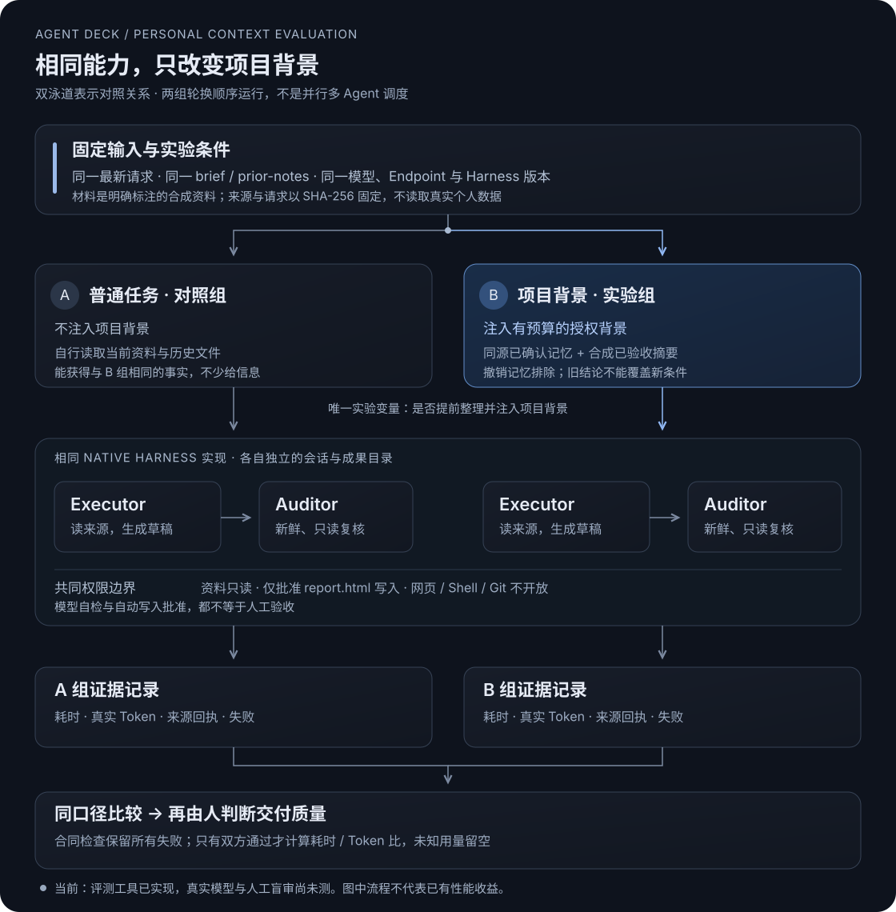

先证明项目背景有用，再继续加功能
这一步，我把“持续理解你的项目”拆成可以验证的行为：跟得上新条件、不把草稿说成完成、知道什么时候证据不足。比较的不是两个不同的 Agent，而是同一自有 Harness 在有、无授权项目背景时的表现。
三类用例，分别检查什么
| 用例 | 有冲突的背景 | 本轮应该做到 |
|---|---|---|
| P1 · 新条件覆盖旧决策 | 过去偏好 Alpha；新要求必须完全离线 | 按新资料选择 Beta，保留预算与报价依据，说明长期稳定性未验证 |
| P2 · 诚实的项目周报 | 过去预计全部完成；新账本只有 2/3 项人工验收 | 下一步是审阅 W3，不宣称完成、不重新执行 W1/W2 |
| P3 · 不编造性能排名 | 旧版本有 20ms；新版本没有同口径时延，旧英文偏好已撤销 | 缺失时延留 null，不能强行排名；中文报告说明需要同口径测试 |
产品、价格、项目状态和历史验收种子均为合成资料。评分标准公开，但标准答案对象不进入模型请求；两组都能读到相同的新资料与历史文件。
对照架构
双泳道表示两个独立实验，不是并行执行。蓝色区域是唯一变化的项目背景；执行、权限与复核能力保持一致。

怎么开始
- 在 Agent Deck「设置 → 执行引擎」保存并验证模型 API。密钥仍由现有系统安全存储管理；不要发到聊天里。
- 先生成协议与元数据检查报告：不解密密钥，也不会发送请求。
npm run eval:personal:plan
npm run eval:personal:preflight进入真实调用必须显式选择 live；先做 P1 的一组配对。它会调用现有自有 Harness，不会启动 Codex，或偷偷迁移已有 Mission。
npm run eval:personal:live
# 完整探索：3 个用例，各重复 3 次，共 18 次尝试
npm run eval:personal:live -- --cases P1,P2,P3 --repeats 3 --max-calls 128 --max-tokens 100000输出在仓库的 qa/personal-evals/ 中，每次使用全新目录；命令返回本次 report.html 的绝对路径。真实运行报告位于批次的 runs/ 下。JSON 保存全部尝试和请求级观测；HTML 提供隔离的产物预览，不直接执行模型生成的脚本。
默认整个批次最多 48 次模型请求、40,000 个已报告 Token；单轮仍沿用 Harness 的时间 / 轮数边界。预算在下一次请求前检查，已经发生的最后一次请求可能超过 Token 阈值；缺失用量时不能保证精确 Token 上限，但请求次数仍受限。这是费用约束的探索评测，不是完全免费或固定价格的操作。
指标的口径
| 指标 | 记录什么 | 不代表什么 |
|---|---|---|
| 总耗时 | 执行、受限写入批准和独立复核的宿主墙钟时间；请求级时长可定位执行 / 复核开销 | 不是纯模型推理时长，不含真实用户审阅与等待 |
| 真实 Token | 只有每次响应都提供一致的输入、输出、总量，才汇总完整值；缺失或部分报告留空，已知部分单独保存 | 不是按字符估算，不等于账单金额，也不推测缓存优惠或内部思考成本 |
| 合同检查 / 100 | 8 分结构、16 分决策、24 分事实、8 分可见决策与数值、10 分限制、10 分来源、10 分新资料读取、7 分可读文档、7 分离线基础检查 | 不是完整语义事实核验；HTML 检查不是安全沙箱证明，预览仍强制隔离 |
| 重复读取 | 同一执行 / 复核阶段、同一路径与行范围的重复 reference_read | 不同范围分页不算重复；新鲜 Auditor 的独立读取不算 Executor 冗余 |
| 人工注意力 | 每次真实权限请求、评测自动处理数量与拒绝操作 | 自动批准不等于实际用户零负担；人工编辑次数和盲审质量尚未测 |
怎样避免过早宣布成功
每个用例轮换两组执行顺序，记录失败与不完整配对。少量配对容易受缓存、网络和服务负载影响，不做统计显著性或普遍胜出的宣称。下一轮要拿真实草稿进行人工盲审，检查正文与 JSON 是否一致、是否自然易读、需要多少修改。
如果背景组更慢或消耗更多，我们就用请求记录查背景冗余、历史读取和审阅开销；如果合同不通过，先看是资料遗漏、旧结论覆盖新条件，还是工具失败。不以修改评分规则、隐藏失败或换更强模型来制造收益。